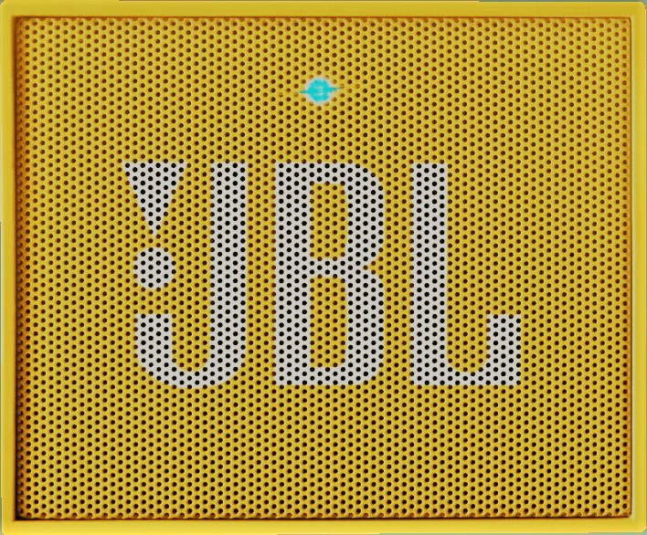

<!-- 
Aufgabe: Abschlussaufgabe - MusicBox
Name: Salome Weißer
Matrikel: 254669
Datum: 21.07.2017
	
Hiermit versichere ich, dass ich diesen Code selbst geschrieben habe. Er wurde nicht kopiert und auch nicht diktiert.
-->
<!DOCTYPE html>
<html>
<head>
<meta charset="UTF-8">
<title>MusicBox</title>

<script type="text/javascript" src="mb.js"></script>

</head>
<body>
   <!--  -->
	<canvas width= 1024 height="530" style = "border: 2px solid grey"></canvas> 


</body>
</html>